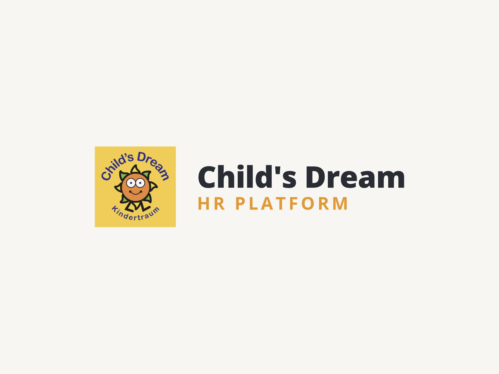
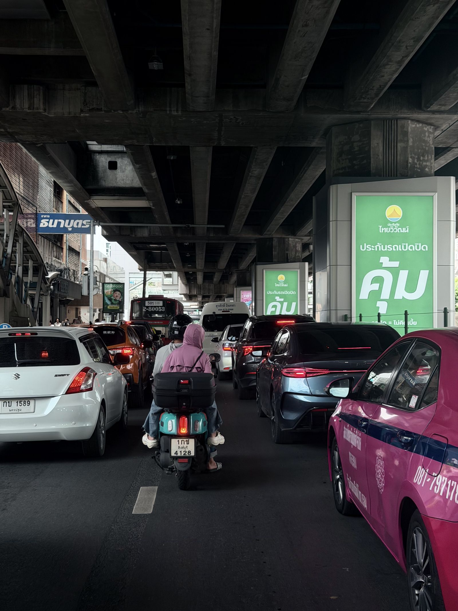

An HR platform for Child's Dream. Volunteers log their work from their phone, and HR creates the visa report in one click.

From hours of sorting photos to one click.
Volunteers at Child's Dream need photo proof of their work for their visa and work permit reports. Collecting these photos and their related data meant thousands of emails, chats, unnamed photos and hours of formatting before each deadline. Hours that should have gone to Child's Dream's beneficiaries.
I built one place for it. Volunteers log their work from their phone. HR checks it and gets to create the report in one click and in the right format.
432 activities were logged in November alone. Every volunteer in Chiang Mai uses it.
Coding was not the challenge. Understanding each other was.
Across languages and cultures, important things often went unsaid. So I asked more, showed prototypes early and checked in often. That gap is now the topic of my bachelor's thesis.